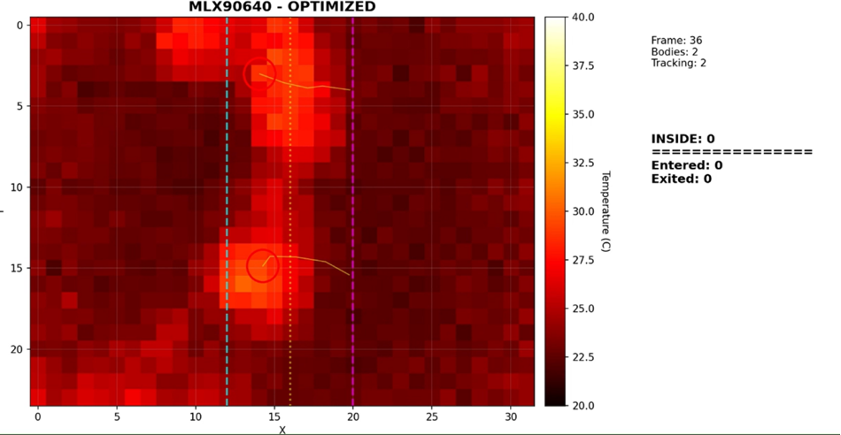

infrared samples per frame
MLX90640 / ESP32 / Computer Vision
Edge thermal intelligence for anonymous people flow.
32×24 IR sensor on an ESP32. Firmware reads frames, finds heat blobs, tracks them across the doorway, and counts who's coming and going — all on-device. Python dashboard for the live heatmap and counters.
Frame
0000
Bodies
0
Inside
0
Mode
16 Hz
baud serial pipeline
ESP32 access point stream
counter logic on device
System Design
Sensor to doorway counter in a few hundred lines.
The firmware reads MLX90640 frames, thresholds by temperature, finds connected blobs, and tracks each center across frames. A decision line down the middle of the field of view handles entry vs exit. The Python dashboard picks up frames over serial or WiFi and renders everything live.
01MLX90640 frame capture
02Temperature mask + blob detection
03Nearest-neighbor tracking
04Entry and exit decision line
Project Structure
Firmware, dashboard, and docs all in one place.
Firmware and Python dashboards are split into separate folders so it's easy to find what you need — whether you're flashing the ESP32 or tweaking the visualizer.
firmware/edge_counterESP32-side detection, tracking, and entry/exit counting.
firmware/wifi_streamAccess-point TCP stream for wireless thermal frames.
firmware/serial_streamHigh-throughput serial thermal matrix transmitter.
software/thermal_dashboardPython visualizers for serial, WiFi, optimized, and CLI modes.
Code Map
Four scripts, four use cases.
Python
Fast thermal dashboard
Serial reader, parser, heatmap, connected components, tracking, and counters.
Python WiFi control dashboardConnects to the ESP32 access point and renders live thermal frames over TCP.
Arduino Edge counter firmwareMemory-conscious ESP32 firmware with center output, FPS reports, and pause control.
Arduino WiFi streaming firmwareCreates an ESP32 AP and streams 32x24 temperature matrices to the Python client.
Hardware Demo
Running live.
ESP32 and MLX90640 connected over I2C, serial output piped into the Python dashboard. The heatmap updates in real time as people cross the sensor's field of view — entry and exit counts tick up on the right.
